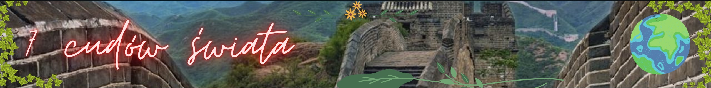
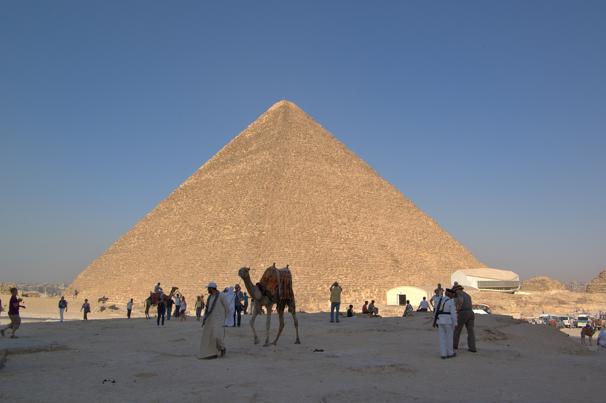
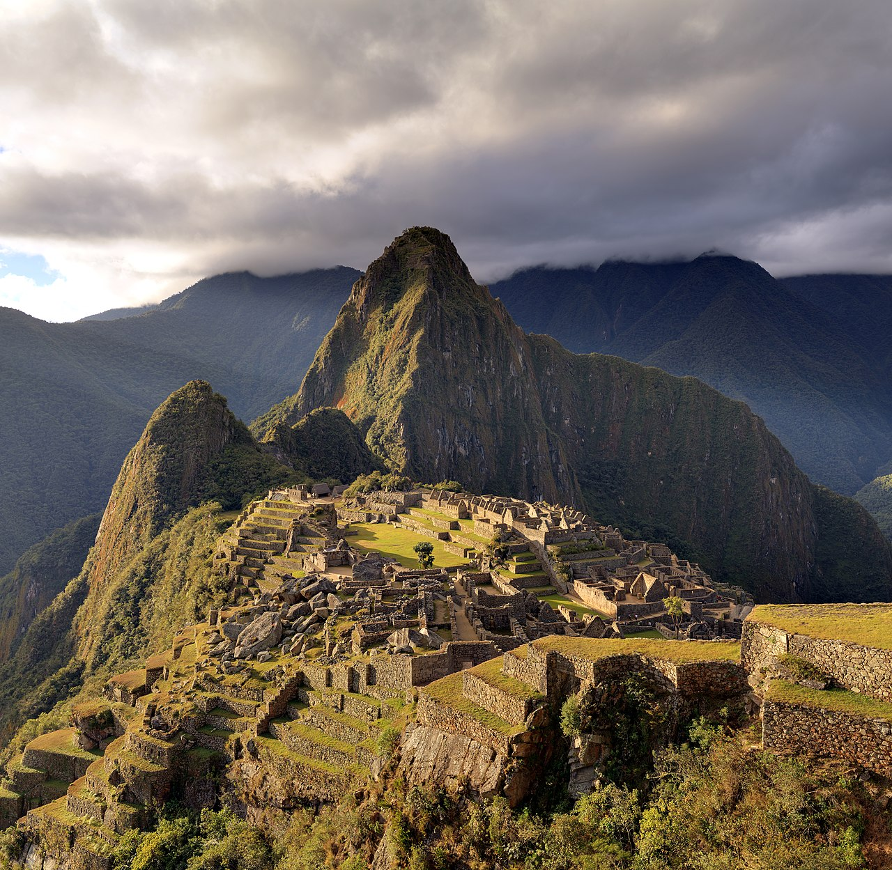
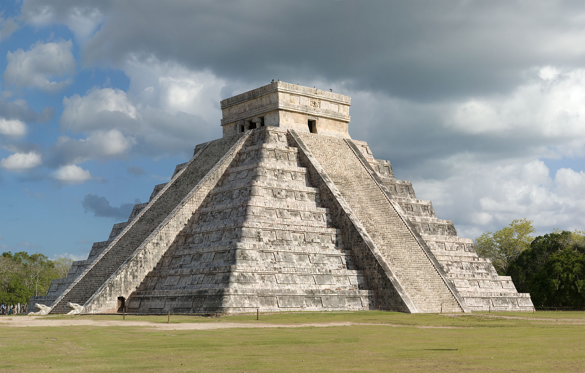
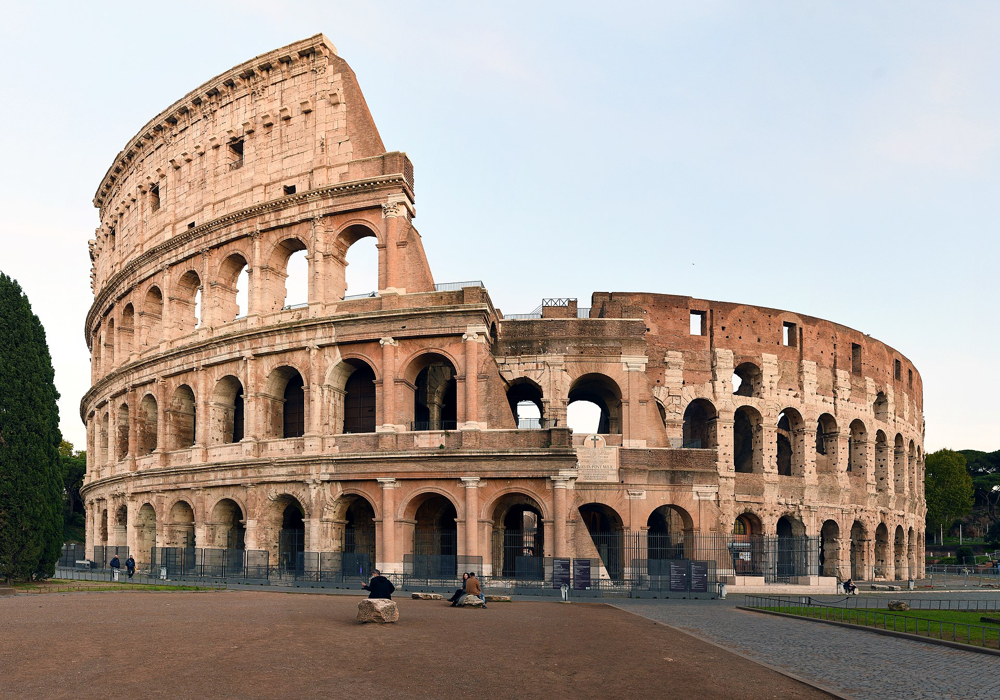

Statua Chrystusa Zbawiciela w Rio de Janeiro
Wielka Piramida Cheopsa w Gizie

Wielki Mur Chiński
Petra (Jordania)
Machu Picchu

Chichén Itzá

Koloseum

Który cud Ci się najbardziej podoba?
Statua Chrystusa Zbawiciela w Rio de Janeiro
Wielka Piramida Cheopsa w Gizie
Wielki Mur Chiński
Petra (Jordania)
Machu Picchu
Chichén Itzá
Koloseum
Dlaczego?